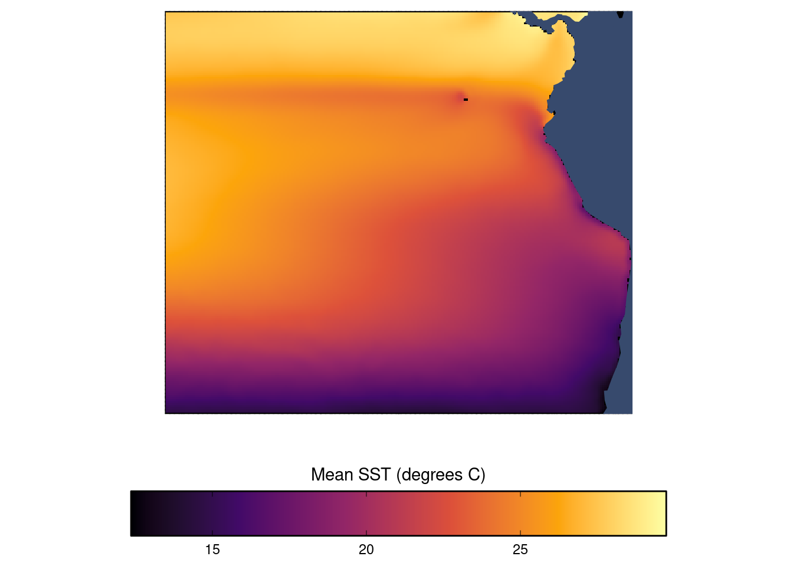
2 Exploratory data analysis
Note that all maps are zoomed into the area surrounded by the proposed geographic analysis scope.
2.1 Sea surface temperature (SST)
We can look at a map of SST, simply looking at the average monthly SST from across the entire January 2016 through August 2024 time series (Figure 2.1).
Aggregating across the mean sea surface temperatures of each pixel, we can calculate the mean sea surface temperature over time within our study scope (Figure 2.2). This allows us to see both seasonal trends and larger trends over time.

2.2 Sea surface temperature (SST) forecasts under climate change
Here we look at a map of mean sea surface temperature (SST) under the four different climate change scenarios, and the three different forecast horizons, and focusing on the area of our analysis scope (Figure 2.3).
Here we look at time series of climate change forecasts for monthly average SST for each forecast time horizon and scenario, and focusing on our spatial analysis scope (Figure 2.4). As expected, projected SST is higher for time horizon further into the future, and for more extreme climate change scenarios.

2.3 Oceanic Niño Index (ONI)
Here we look at the time series of ONI data, focused on the time period for which we have AIS-based effort data (Figure 2.5):

2.4 AIS-based Fishing effort
Here we look at total fishing effort from 2016 through August 2024 within the analysis scope, by flag (Figure 2.6). China dominates the fishing effort with over 97% of all effort, with Taiwan a distant second at barely 1%.

Next we look at a time series of total monthly AIS-based fishing effort by fishing flag over time within the analysis scope (Figure 2.7). The top top 5 flags are shown.
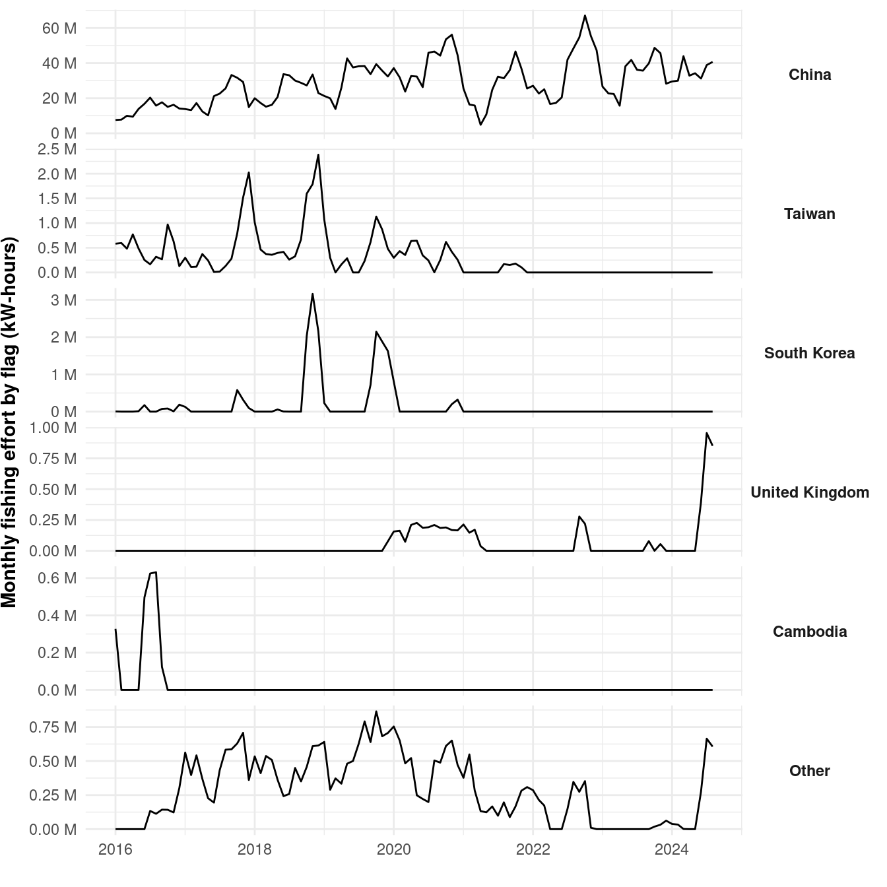
Next we can look at the temporal trend of total fishing effort alongside the temporal trend of SST (Figure 2.8).
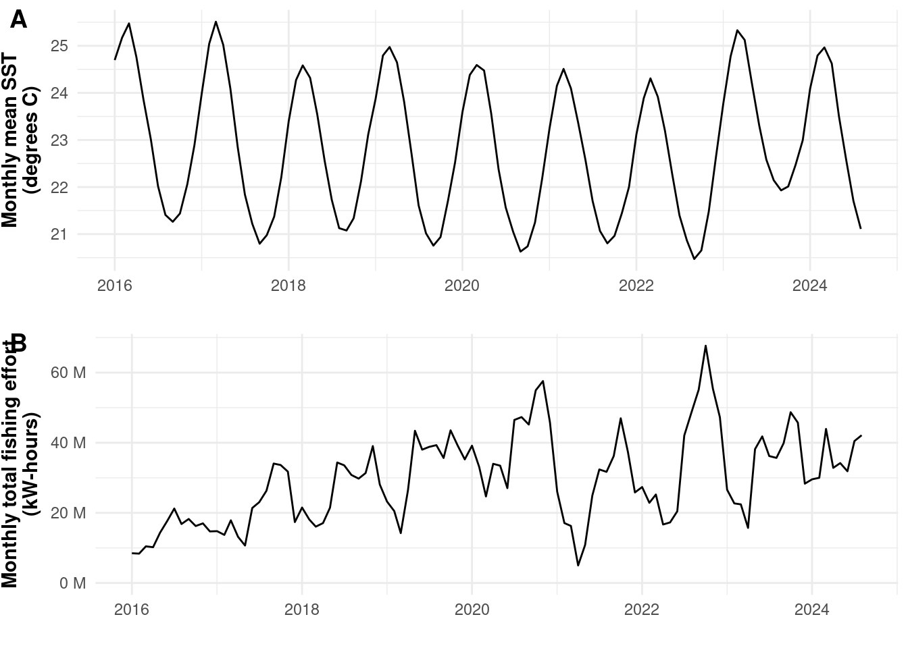
We can also aggregate the effort data by calculating the total effort for each month in each year, allowing us to look at the historic seasonal variation of total effort. We can do so for two regions: the “equatorial” region (latitude -10 to 10) and the “sub-equatorial” region (latitude -40 to -10) (Figure 2.11, Figure 2.12).
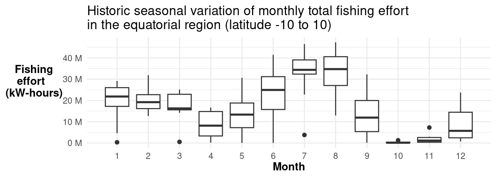
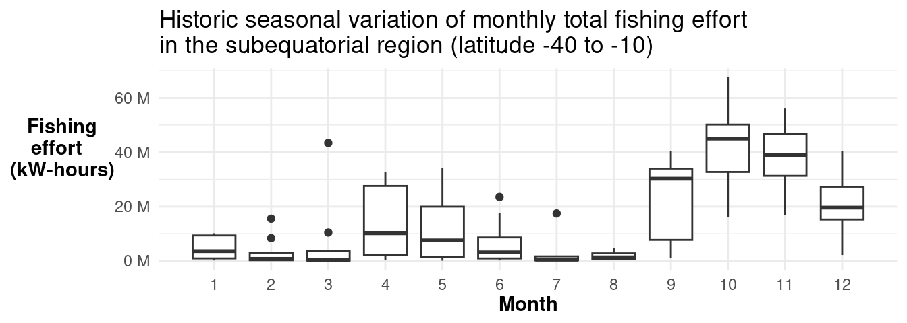
We can also aggregate the SST data by calculating the mean SST for each month in each year, allowing us to look at the historic seasonal variation of monthly mean sea surface temperature. We can do so for two regions: the “equatorial” region (latitude -10 to 10) and the “sub-equatorial” region (latitude -40 to -10) (Figure 2.11, Figure 2.12).
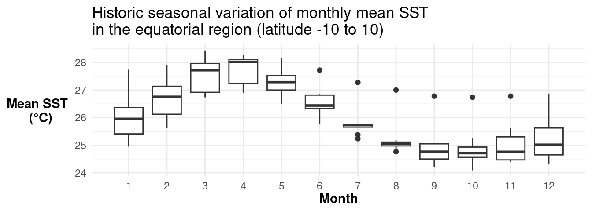
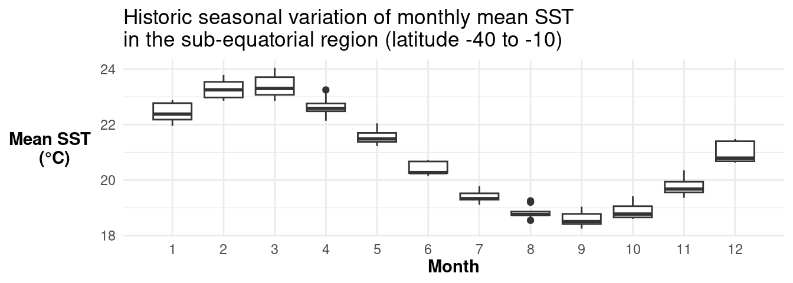
Next we can look at at a map of AIS-based squid fishing effort (Figure 2.13), aggregating effort across effort and flags and time for each pixel across the entire processed time series. EEZ boundaries from Marine Regions v12 are shown in orange (Institute (2023)).
We can also look at this map of total fishing effort alongside a map of mean SST (Figure 2.14).
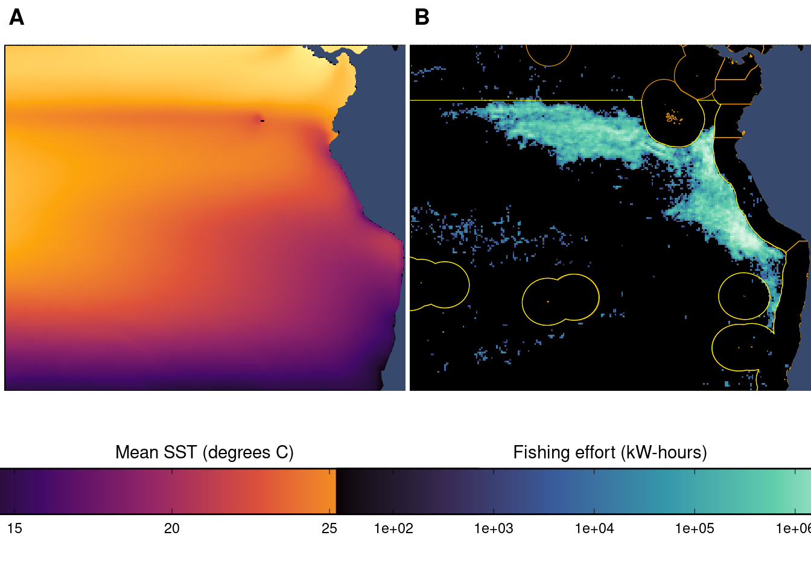
We can also look at these effort maps, broken apart by flag, and still aggregating squid jigger fishing effort from 2016 through August 2024, aggregating effort across time for each pixel. The top 5 flags are shown.
[[1]]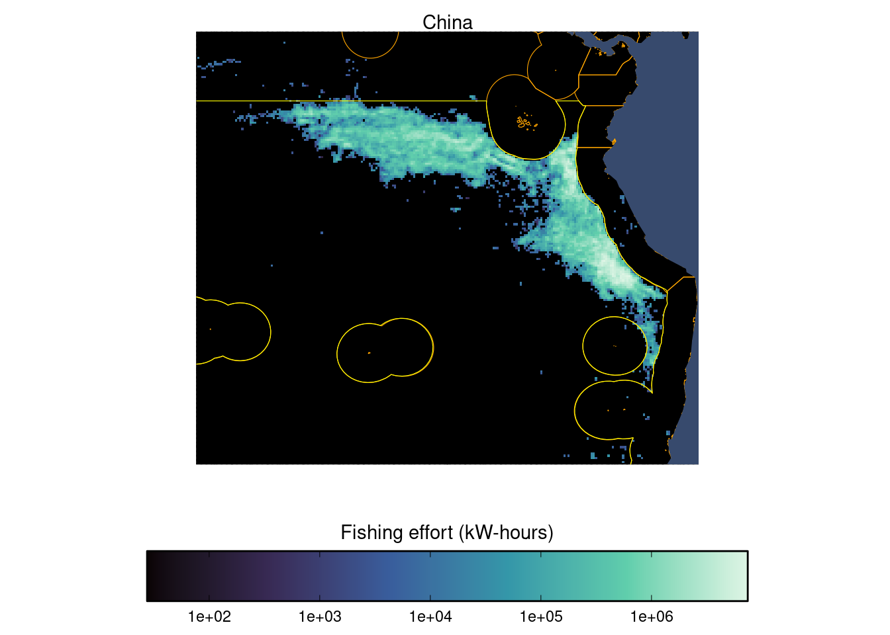
[[2]]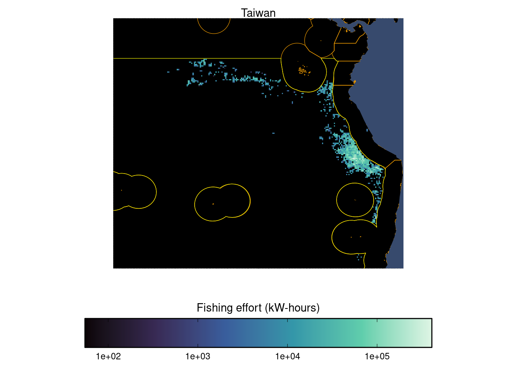
[[3]]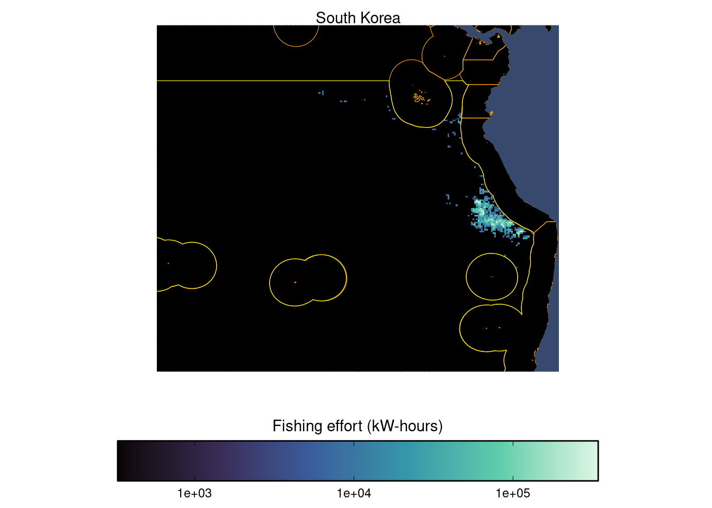
[[4]]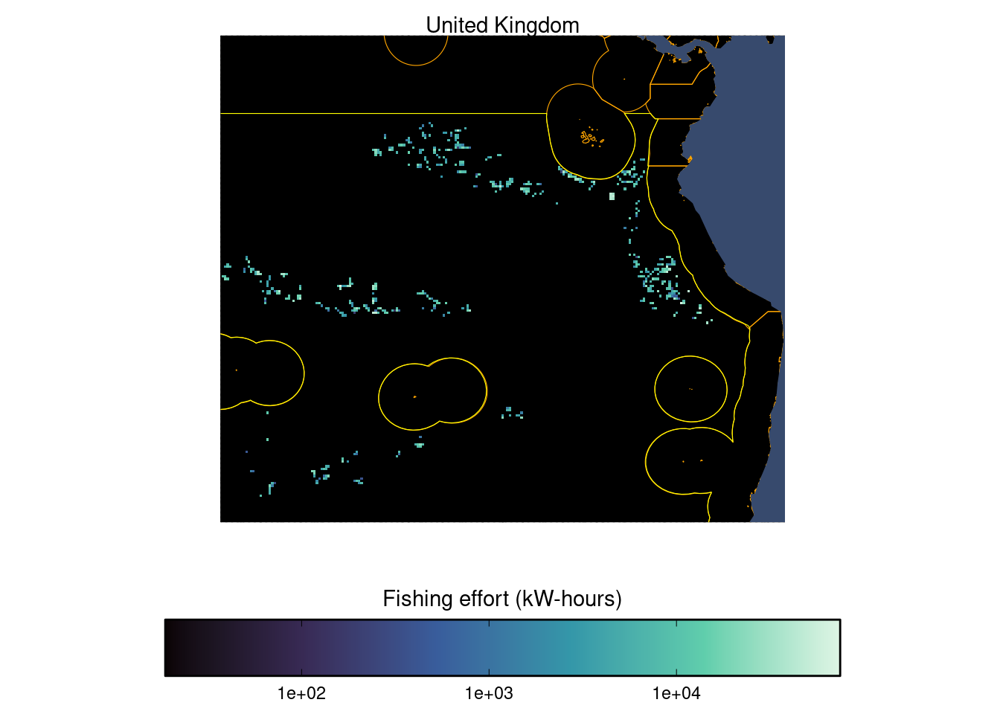
[[5]]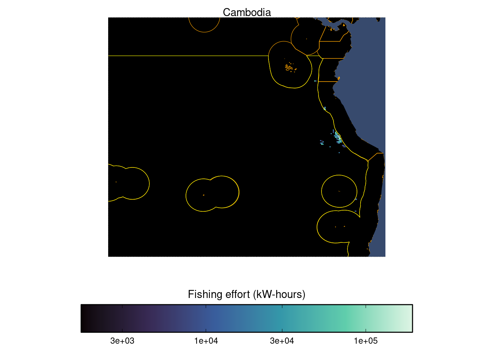
3 Distance to nearest EEZ
Here we look at a map showing the distance to the nearest 200nm EEZ/high seas boundary for each 0.25x0.25 degree pixel. For pixels on the high seas, this number represents the distance to the nearest EEZ; for pixels inside EEZs, this represents the shortest distance to the high seas.